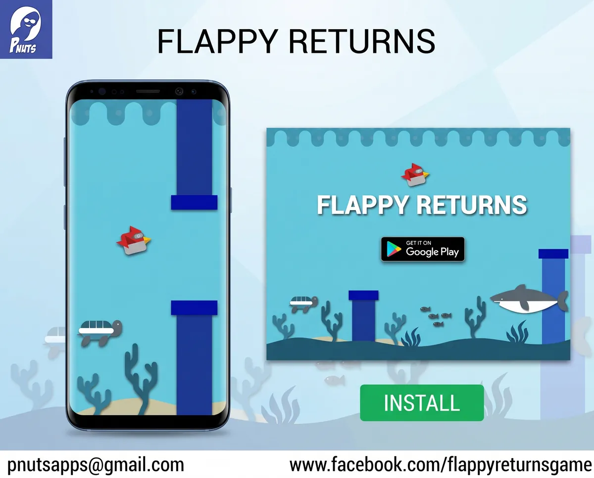
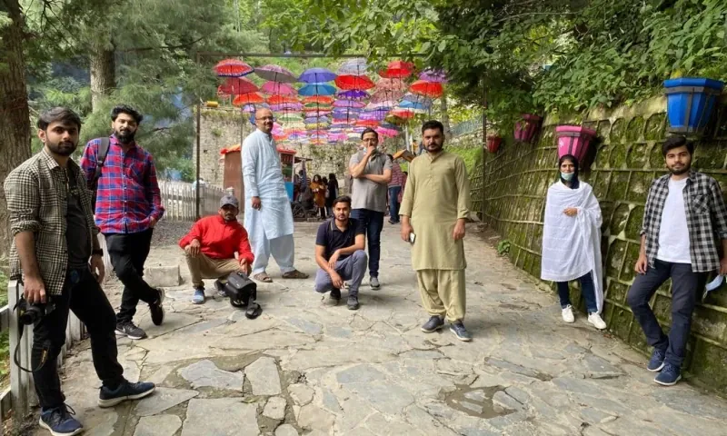
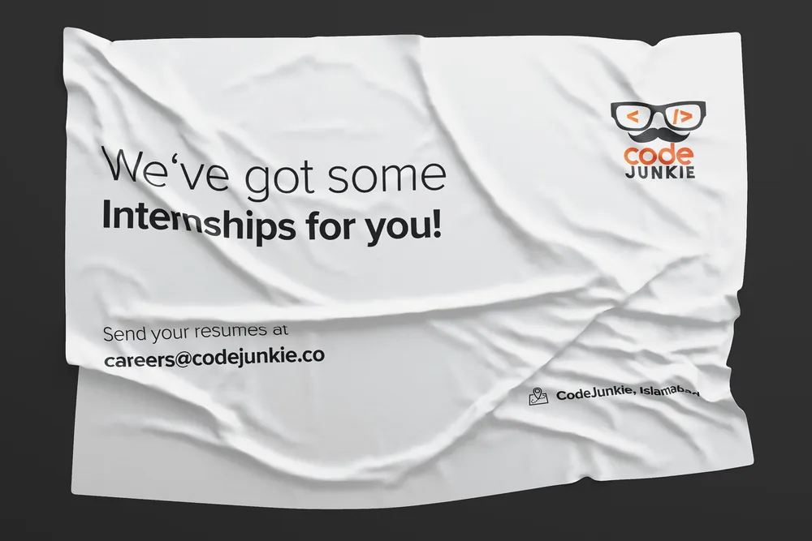
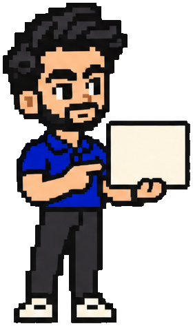

Design became products.
Products became a company.
It began with a student trip company I co-founded at NUST. We had no money for a designer, so I opened Photoshop.
Design /Freelance gigs, then a contract with a social media design agency
First app /Flappy Returns, a mobile game built on a physics engine
CodeJunkie /Co-founded in my final semester. I ran tech as CTO, and we grew to 25




- Startups worldwide, from idea to MVP
- Awarded by review platforms like DesignRush
Dig in: how it started
I studied computer science, so building what I designed came naturally. After the game I designed the UI and UX for all my own projects and freelanced building full web apps.
At CodeJunkie I ran the technical side. Besides startups we built for corporate clients, and I trained our designers and developers as the team grew.
- Brand design
- UI/UX
- Web apps
- MVPs
- Team of 25
Excursion company /
brand work
brand work
CodeJunkie /
logo
logo